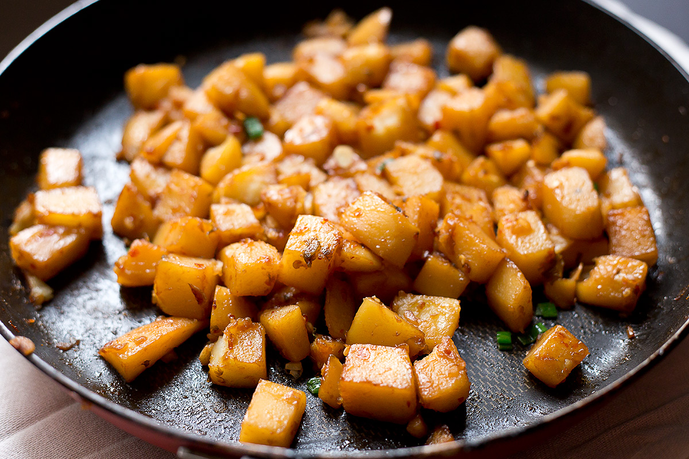

Braised spicy potatoes recipe

Description
Braised spicy potatoes is a simple Korean potato side dish consisting of potatoes (regular or baby).
The potatoes are fried first, before simmering in the sauce to soften the potato.
Once cooked through, the sauce is then thickened until sticky and clinging to the potato.
Ingredients
- 400g of potatoes
- 2 tbs of chopped green onion
- 1 tbs of minced garlic
- 3 tbs of soy sauce
- 1.5 tbs of red pepper powder
- 1.5 tbs of sugar
- 2 tbs of oligosaccharide
- 2 cups of water
- Cooking oil
Steps
- Cut the potatoes in half.
(If you want potatoes, soak them in cold water to remove starch.)
- Put seasoning ingredients in a bowl and mix them.
- Grease a heated pot and stir-fry potatoes on medium heat for about 2 minutes.
- Put water and marinade in the stir-fried potatoes and boil them.
- Cook chicken 2.5 mins.
- When the soup is half boiled, turn the heat down to low and boil it down.
- Sprinkle potatoes with green onions.